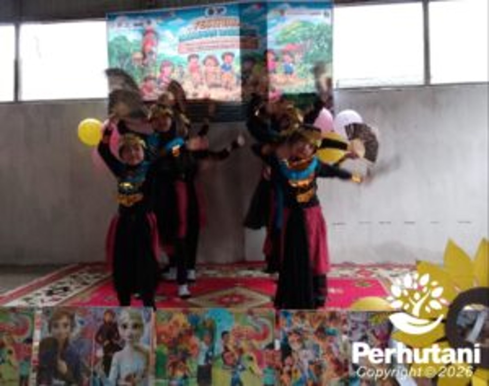

KUNINGAN, PERHUTANI (18/01/2026) | Perhutani Kesatuan Pemangkuan Hutan (KPH) Kuningan bersama Kepala Dinas Kearsipan dan Perpustakaan Kabupaten Kuningan turut menghadiri kegiatan peresmian gedung baru Taman Baca Masyarakat (TBM) Pondok Kata RZ yang dirangkaikan dengan Festival Kaulinan Barudak, dalam rangka memperingati Hari Ulang Tahun ke-5 TBM Pondok Kata RZ. Kegiatan tersebut dilaksanakan pada Minggu, 18 Januari 2026, bertempat di TBM Pondok Kata RZ, Dusun Kiwon, Desa Bojong, Kecamatan Kramat Mulya, Kabupaten Kuningan.
Administratur KPH Kuningan, Siti Kasanah, melalui Kepala Sub Seksi Keuangan Program Masyarakat dan Tanggung Jawab Sosial dan Lingkungan KSS Keuangan PMRTJSL, Bapak Uri Syamhari, didampingi Kepala Sub Seksi Hukum, Kepatuhan, dan Komunikasi Perusahaan Kepala Sub Seksi Hukum Kepatuhan Agraria dan Komunikasi Perusahaan (KSS HKAKP), Bapak Dani Ramdani, menghadiri langsung peresmian Taman Baca Masyarakat tersebut sebagai bentuk dukungan Perhutani terhadap peningkatan literasi dan kualitas kehidupan masyarakat.
Perhutani KPH Kuningan terus berkomitmen dalam meningkatkan kualitas kehidupan sosial masyarakat. Salah satu wujud nyata komitmen tersebut adalah melalui penyaluran Bantuan Tanggung Jawab Sosial dan Lingkungan (TJSL) yang disalurkan kepada Taman Baca Masyarakat Pondok Kata RZ, guna mendukung pengembangan sarana literasi dan edukasi bagi masyarakat sekitar.
Rangkaian acara peresmian dimulai pukul 08.00 WIB dan dilaksanakan di gedung TBM lama. Kegiatan diawali dengan pembacaan ayat suci Al-Qur’an oleh Fattimah Azzahra dan Kaila, dilanjutkan dengan menyanyikan Lagu Indonesia Raya yang dipandu oleh Syaharani selaku dirigen. Acara kemudian dimeriahkan dengan penampilan berbagai pertunjukan seni dari anak-anak dan anggota TBM.
Sambutan disampaikan oleh Ketua TBM Pondok Kata RZ, Ibu Vera Verawati, Kepala Desa Bojong Bapak Adnan, Kepala Dinas Kearsipan dan Perpustakaan Kabupaten Kuningan Bapak H. Nurahim, serta sambutan dari Administratur KPH Kuningan yang diwakili oleh KSS Keuangan PMRTJSL, Bapak Uri Syamhari.
Acara dilanjutkan dengan sambutan sekaligus pembukaan resmi kegiatan oleh Bunda Literasi Kabupaten Kuningan, Ibu Hj. Ela Helayati, . Pada kesempatan tersebut juga dilakukan penyerahan bantuan buku dari Pusbook Kemendikdasmen kepada TBM Kuningan oleh Kepala Dinas Perpustakaan dan Kearsipan Kabupaten Kuningan.
Sebagai puncak kegiatan, dilaksanakan peresmian gedung baru TBM Pondok Kata RZ yang dirangkaikan dengan syukuran Hari Ulang Tahun ke-5 TBM . Diharapkan dengan hadirnya gedung baru ini, TBM Pondok Kata RZ dapat semakin berperan aktif sebagai pusat literasi, pelestarian budaya, serta ruang tumbuh kreatif bagi generasi muda dan masyarakat Kabupaten Kuningan.
Editor: WK
Copyright © 2026 Warta Nusantara Barat